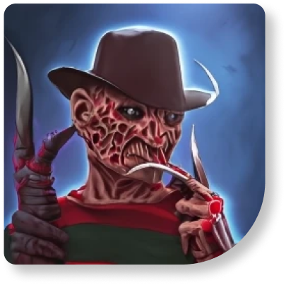

.jpg)


Жертвы маньяка: кровью наполненный кошмар
Город был охвачен страхом. Маньяк убийца орудовал уже много месяцев, и жертвы падали одна за другой, словно в спокойной деревне начался настоящий кошмар. Никто не знал, кто он или она, и никто не мог предсказать, где и когда он ударит снова. Жители города только молились, чтобы их семьи, друзья и близкие оставались в безопасности.
Но маньяк был настойчивым и все более жаждущим крови. Он казался способным на всё, включая убийство детей и беременных женщин. Он оставлял зверские следы на местах преступлений, показывая свою жестокость и садизм. И хотя местная полиция работала круглосуточно, они не могли найти его.
И тогда, когда казалось, что весь город окончательно охвачен страхом, что все попытки остановить маньяка безрезультатны, случилось нечто странное.
Полиции удалось найти свидетеля, который видел преступника на месте убийства. Именно благодаря этому свидетелю, секретная группа расследования наконец-то получила главную улику. И тут началась настоящая погоня за маньяком. В заброшенном здании эта погоня достигла своего кульминационного момента. Маньяк был буквально окружен полицейскими, но он не желал сдаться и начал пытаться выйти к чертовой матери. Гибельной охоте на убийцу пришел конец в тот момент, когда он смог перепрыгнуть с открытого окна на землю и сорвался в пропасть.